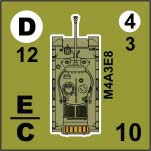

14. Anti-Personnel (AP) Combat¶
14.1 Anti-Personnel Fire¶
Anti-personnel (AP) fire may be used against infantry units, unarmored vehicles, and Guns. AP fire is considered an area fire attack, and may affect any or all eligible units in the target hex. AP fire has no effect on AFVs.
14.2 Anti-Personnel Fire Groups¶
Infantry units occupying the same hex may form a fire group, combining their APFP ratings to fire at the same target, or they may fire separately (or in smaller fire groups) at different targets. Infantry units in the same hex may not fire separately at the same target; if the units are attacking the same target, during the same turn, they must form a single fire group and combine their APFP ratings. A leader may use his Leadership Modifier to modify a fire group's attack, in addition to adding his APFP rating. Fire groups may conduct Opportunity Fire attacks.
14.3 Passengers on Transport Vehicles¶
Infantry units being transported may conduct AP fire attacks. Light (L) machine guns, grenades, and satchel charges are the only support weapons passengers may use. Passengers may not join or form a fire group with infantry units outside of the transport vehicle, but they may form a fire group with other units in the vehicle, or with the transport vehicle. If the passenger unit(s) and transport are attacking the same target they must form a fire group and combine their APFP ratings into one attack.
14.4 AFV, Vehicle, and Gun AP Fire Guidelines¶
AFVs, vehicles, and Guns may never form fire groups; they must resolve their AP attacks separately (Exception: Passengers may form a fire group with their transport vehicle).
| Type | Range |
|---|---|
| Gun APFP | Unlimited |
| MG APFP | 8 |
AFVs and vehicles may be armed with multiple AP weapons, indicated by multiple APFP ratings on the unit's counter. A Gun has only one APFP rating, listed under its ATFP rating. If an AFV or vehicle is equipped with more than one AP weapon - Gun, FF MG, or 360° MG, or any combination of the three - the unit may combine the APFP ratings into a single attack against one target. Regardless of the number of different weapons the unit may have, it may only conduct one attack per turn. Gun APFP may be fired at an unlimited range. MG APFP has a maximum range of eight hexes.
A unit with a white circle beneath its Gun APFP is a turreted unit, and may fire its Gun in any direction. Otherwise, a unit's Gun APFP may only be fired at a target in the unit's FFA. A 360° MG, noted by the white circle beneath the MG's APFP rating, may fire at a target in any direction within eight hexes. A FF MG may only fire at a target in the unit's FFA within eight hexes.
Example

The M4A3E8 is equipped with its main Gun (with an APFP of 12), a 360° MG (with an APFP of 4), and a FF MG (with an APFP of 3). The M4A3E8 is turreted (noted by the white circle under the ATFP), so the Gun may be fired in any direction, at unlimited range, with an APFP of 12. Or it may fire its Gun with the 360° MG (noted by the white circle under the MG's rating) in any direction, to a range of eight hexes, with an APFP of 16. Or it may fire all three in its FFA, to a range of eight hexes, with an APFP of 19.
14.5 AP Fire Procedure¶
The attacking player declares which units are conducting an AP fire attack, the target hex of the attack, and totals the APFP ratings of the attacking units. The attacking player makes a dice roll and applies any cover and leadership modifiers to the roll, and cross-references the final dice result with the APFP total on the Anti-Personnel Combat Table.
14.6 Combat Results¶
Each attack will yield one of two results on the AP Combat Table: a dash (-), indicating the attack had no effect, or Casualty Points (a # result), indicating units in the target hex have suffered casualties or damage.
14.61 Applying Casualty Points¶
| Action | CPs applied | Notes |
|---|---|---|
| Pin unit | 1 | Unit may not be eliminated after pinning |
| Reduce squad to half squad | Difference in Casulaty Rating | May be pinned for 1 additional CP |
| Eliminate unit | Casualty Rating |
The defending player determines how Casualty Points are applied to the units in the target hex. He may choose to pin a unit for one Casualty Point, reduce a squad to a half squad for a number of Casualty Points equal to the reduction in Casualty Rating (i.e. a 4-6-4 Rifle squad reduced to a 2-6-2 Rifle half squad would fulfill two Casualty Points), or eliminate a unit for a number of Casualty Points equal to the unit's Casualty Rating. A squad that is reduced to a half squad may also be pinned for one additional Casualty Point. A unit may never be pinned and then eliminated; it must either be pinned, reduced (and then pinned, if desired), or eliminated. The defending player must fulfill all Casualty Points inflicted (i.e. the defending player must pin units, reduce squads to half squads, or eliminate units until all of the Casualty Points have been equalled or exceeded). If pinning units in the target hex will not fulfill the Casualty Point total, units must be reduced or eliminated before pinning occurs.
14.62 Casualties Points and Pinned Units¶
Casualty Points must be applied to unpinned units in a target hex before being applied to pinned units. If there are no unpinned units left the owning player has no option but to eliminate units. Pinned units may not be reduced, and are eliminated at their normal Casualty Rating.
14.63 Gun Shields and Valorous Units¶
Guns with a Gun Shield and valorous infantry units (see 16. Infantry Valor) may ignore the first Casualty Point inflicted against them. A Gun Shield only ignores the first Casualty Point if the attack occurs from within the Gun's FFA. After the first Casualty Point is ignored, if any additional Casualty Points remain, they must be applied to the same unit- either to pin, reduce, or eliminate the unit-before being applied to any other unit in the target hex.
14.64 Unarmored Vehicle and Gun Survival Roll¶
Unarmored vehicles and Guns may be pinned by one Casualty Point, but if multiple Casualty Points are applied - up to the unit's maximum Casualty Rating - the unit must make a survival die roll. If the die roll is equal to or less than the Casualty Rating of the unit it is pinned, with the unit effectively "absorbing" all of the Casualty Points applied. If the die roll is greater than the Casualty Rating, the unit is eliminated. Any single attack against a vehicle or Gun that inflicts Casualty Points greater than the unit's Casualty Rating automatically eliminates the unit, no survival roll necessary. Passengers suffer the same fate as their transport vehicle, and if Passengers are eliminated their Casualty Rating is added to the total fulfilled. Pinned vehicles or Guns that receive Casualty Points may not make a survival roll, and are instead eliminated at their normal Casualty Rating.
14.65 Collateral Damage to Passengers¶
Infantry units being transported by unarmored vehicles may be reduced or eliminated to fulfill Casualty Points, before applying any damage to the transporting vehicle or other units in the hex. Passengers on an AFV may not be used for collateral damage, since AP attacks have no effect on AFVs. Passengers may not be pinned to fulfill Casualty Points; they may only be reduced or eliminated. A Gun being transported may not be used as collateral damage.
14.7 Pinned Units¶
When a unit is pinned it is flipped upside down. A pinned unit is unable to perform any actions, nor may it act as a spotter. If the pinned unit is a vehicle any passengers are also pinned. A unit remains pinned unless it successfully rallies during the After-Action Phase (see 14.8, below), or until the owning player's next Command Phase when it automatically rallies and is flipped to its face-up side.
14.8 After-Action Phase Rally Attempt¶
| Unit | Dice roll |
|---|---|
| Leader | ≤ 7 |
| Infantry (elite) | ≤ 7 |
| Vehicle | ≤ 7 |
| Gun | ≤ 7 |
| Infantry | ≤ 6 |
The active player, during his After-Action Phase, may attempt to rally his pinned units. Leaders, elite infantry units, vehicles and Guns rally on a dice roll of 7 or less. Regular infantry units rally on a dice roll of 6 or less. An unpinned leader may add his leadership modifier to the rally attempt of pinned unit(s) occupying the same hex. If a vehicle carrying passengers successfully rallies the passengers also rally.
AP Combat and Casualty Reduction Example¶
The German units in hex A1 (stack 1), are firing on the American units (stack A) in building hex B3. LOS is clear, and the range is two hexes- well within firing range. Since the German units are adjacent to the hedge they may fire over it with no penalty. The APFP is 12 (4 for each squad, 3 for the MG, plus 1 for the leader). The German player rolls two dice that yields a result of 5, modified by -1 for the leader (Hermes), and the building in hex B3 adds a +3 cover modifier, for a total modified attack dice roll of 7 (5-1+3=7). An APFP of 12 cross-indexed with an attack dice roll of 7 on the 11-18 row of the AP Combat Table yields a Casualty Point result of 2. The American player decides to reduce the squad not carrying the MG to a half squad for two points.

Since the Americans still have a lot of firepower, and no pinned units, the German player decides not to move his second stack of units (stack 2), and opts to fire on the Americans again. The APFP total for stack 2 is 13. The German player rolls a 4, subtracts -1 for the leader (Schmidt), and adds the +3 cover modifier for the building for a final result of 6. A dice roll of 6 on the 11-18 row of the AP Combat Table yields 3 Casualty Points. The American player has a tough decision to make, and he chooses to reduce the full squad to a half squad for two Casualty Points, and pins the other half squad for a total of three, leaving a half squad with the MG able to perform an action.
The American player decides to return fire, during the Defensive Fire Phase. His best target is stack 1, the German units behind the hedge. He attacks with an APFP total of 6 (2 for the half squad, 3 for the LMG, and 1 for the leader). He rolls an 8, subtracts -1 for the leader (Coleman), and adds +1 for the hedge's hindrance modifier for a total of 8. Cross-indexing a result of 8 on the 5-10 row of the AP Combat Table yields a result of no effect (-).